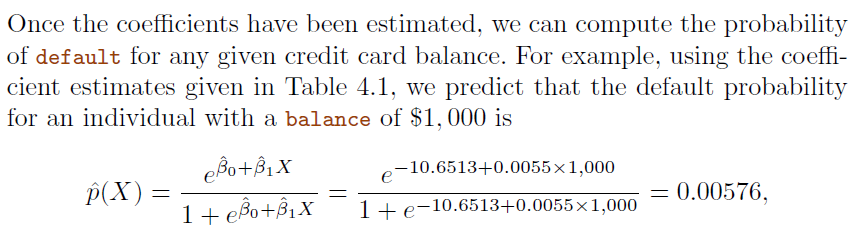

3. Classification#
Example: Credit Card Default
3.1. Why not Linear regression#

In this case of a binary outcome, linear regression does a good job as a classifier, and is equivalent to
linear discriminant analysis.For more than 2 outcome classes, regression will suggests an ordering (\(3>2>1\)), therefore can not use regression for multi-types classification.
However,
linear regressionmight produce probabilities less than zero or bigger than one.Logistic regressionis more appropriate.
3.2. Logistic Regression#
Definition:
Logistic Regressionis a statistical method used forbinary classification. It predicts the probability that a given instance belongs to a particular class. The core idea is to model the probability that a target variableYis a particular value (\(1\) or \(0\)) given a set of independent variablesX.\[ p(X)=\frac{e^{\beta_0+\beta_1 x}}{1+e^{\beta_0+\beta_1 x}} \]A bit of rearrangement gives * This monotone transformation is called the
log oddsorlogittransformation of \(p(X)\) $\( log(\frac{p(X)}{1-p(X)}=\beta_0+\beta_1 X) \)$
3.2.1. The logistic Function#
The
logistic function, also known as thesigmoidfunction, is an S-shaped curve that can take any real-valued number and map it into a value between \(0\) and \(1\), but never exactly at those limits. Mathematically, it is represented as: $\( \sigma(Z)=\frac{1}{1+e^{-z}} \)$where \(z\) is a linear combination of the input features \(X\), i.e., \(z = β₀ + β₁X₁ + β₂X₂ + ... + βₙXₙ\), where \(β₀, β₁, ..., βₙ\) are the parameters of the model.
3.2.2. Estimate Parameters (Maximum Likelihood)#
The parameters \(β₀, β₁, ..., βₙ\) are estimated using the
Maximum Likelihood Estimation(MLE).The idea is to find the set of parameters that maximize the likelihood of the observed data.
We pick \(\beta_0\) and \(\beta\) to maximize the likelihood of observed data.
3.2.3. Making Predictions#

3.2.4. Script Example#
import numpy as np
import pandas as pd
from sklearn.linear_model import LogisticRegression
from sklearn.model_selection import train_test_split
from sklearn.metrics import accuracy_score
import matplotlib.pyplot as plt
import seaborn as sns
data = pd.read_csv("./Data/Heart.csv",index_col=0)
data.head()
| Age | Sex | ChestPain | RestBP | Chol | Fbs | RestECG | MaxHR | ExAng | Oldpeak | Slope | Ca | Thal | AHD | |
|---|---|---|---|---|---|---|---|---|---|---|---|---|---|---|
| 1 | 63 | 1 | typical | 145 | 233 | 1 | 2 | 150 | 0 | 2.3 | 3 | 0.0 | fixed | No |
| 2 | 67 | 1 | asymptomatic | 160 | 286 | 0 | 2 | 108 | 1 | 1.5 | 2 | 3.0 | normal | Yes |
| 3 | 67 | 1 | asymptomatic | 120 | 229 | 0 | 2 | 129 | 1 | 2.6 | 2 | 2.0 | reversable | Yes |
| 4 | 37 | 1 | nonanginal | 130 | 250 | 0 | 0 | 187 | 0 | 3.5 | 3 | 0.0 | normal | No |
| 5 | 41 | 0 | nontypical | 130 | 204 | 0 | 2 | 172 | 0 | 1.4 | 1 | 0.0 | normal | No |
data.boxplot(by="AHD",column=["Age"])
<Axes: title={'center': 'Age'}, xlabel='AHD'>
X,y = data[["Chol","Age"]],data["AHD"]
# Splitting the dataset into training and testing sets
X_train, X_test, y_train, y_test = train_test_split(X, y, test_size=0.2)
# Creating a logistic regression model
model = LogisticRegression()
# Fitting the model
model.fit(X_train, y_train)
# Making predictions
predictions = model.predict(X_test)
# Evaluating the model
accuracy = accuracy_score(y_test, predictions)
print("Accuracy:", accuracy)
Accuracy: 0.4918032786885246
# Create the scatter plot
sns.scatterplot(x="Chol", y="Age", hue="AHD", data=data)
plt.show()
3.3. Multi-variate Logistic Regression#
Equation \(4.10\) also called
Soft-MAXfunction
3.3.1. Case-control sampling and logistic regression#
For example, in heart disease analysis, we have \(160\) cases, 302 controls \(\to \tilde \pi = 0.35\) are cases. Yet the prevalence of heart disease in this region is \(\pi = 0.05\) (
Prior Knowledge) _ In this situation,logistic regressioncan estimate regression parameter \(\beta_j\) accurately (if the model is correct), but the intercept \(\beta_0\) is incorrect _ We can correct the intercept by following transformation $\( \hat \beta_0^* = \hat \beta_0 + log \frac{\pi}{1-\pi}-log\frac{\tilde \pi}{1-\tilde \pi} \)$
3.3.2. Diminishing returns in unbalanced binary data#

Introduction: In the context of machine learning, particularly with
binary classificationtasks, the concept ofdiminishing returnsoften becomes significant in scenarios withunbalanced datasets.An unbalanced dataset is one in which the number of instances of one class (the majority class) significantly outnumbers the instances of the other class (the minority class).
Adding more data points of the
majority classto the training set results in progressively smaller improvements, or even a decline, in the model’s ability to predict theminority classaccurately.
Reasons for Diminishing Returns
Model Bias Towards Majority Class
Inefficient Learning
Mitigation Strategies
Resampling Techniques
Balancing the dataset through
oversamplingtheminorityclass orundersamplingthemajorityclass.
Cost-Sensitive Learning
Adjusting the algorithm to penalize misclassifications from the
minorityclass more heavily.
from sklearn.datasets import make_classification
from sklearn.metrics import classification_report
# Generate an unbalanced dataset
X, y = make_classification(n_classes=2, class_sep=2, weights=[0.98, 0.02],
n_informative=3, n_redundant=1, flip_y=0, n_features=20,
n_clusters_per_class=1, n_samples=100000, random_state=42)
# Split into training and testing sets
X_train, X_test, y_train, y_test = train_test_split(X, y, test_size=0.3, random_state=42)
# Train a logistic regression model
model = LogisticRegression()
model.fit(X_train, y_train)
# Predict and evaluate the model
predictions = model.predict(X_test)
print(classification_report(y_test, predictions))
precision recall f1-score support
0 0.99 1.00 1.00 29402
1 0.90 0.69 0.78 598
accuracy 0.99 30000
macro avg 0.95 0.85 0.89 30000
weighted avg 0.99 0.99 0.99 30000
3.4. Discriminant Analysis#
Discriminant Analysis model the distribution of \(X\) in each of the classes separately, and then use
Bayes theoremto flip things around and obtain \(Pr(Y|X)\)If we assume normal (Gaussian) distributions for each features \(X\), it lead to linear or quadratic discriminant analysis (
LDAandQDA)When the predictor variables \(X\) are assumed to have the same
covariance matrixacross different classes but differentmeans, the resulting discriminant function is linear with respect to the predictor variables.Quadratic Discriminant Analysis (
QDA): QDA does not assume the covariance to be identical across classes. Hence, it uses the class-specificcovariance matrix.offering more flexibility than LDA at the cost of increased computational complexity.
3.4.1. Why Discriminant Analysis#
When the classes are well-separated, the logistic regression’s parameter are surprisingly unstable.
When classes are perfectly or nearly perfectly separated by a linear decision boundary, the
logistic regressionalgorithm will push the coefficients towards infinity in an attempt to achieve perfect separation.If \(n\) (sample size) is small and distribution of the predictors \(X\) is approximately normal,linear discriminant model is more stable
Linear discriminant analysis is popular when we have than 2 response classes.
3.4.2. Bayes theorem for classification#
We write slightly different discriminant analysis since we are dealing with continuous variables _ \(f_k(x) = Pr(X=x|Y=k)\) is the
densityfor \(X\) in class \(k\). _LDAandQDAassumes it’s a normal distribution * \(\pi_k=Pr(Y=k)\) is the marginal orpriorprobability for class \(k\) $\( Pr(Y=k|X=x) = \frac{\pi_k f_k(x))}{\sum_{l=1}^{K}\pi_l f_l(x)} \)$
3.4.3. Linear Discriminant Analysis with one predictor (\(p=1\))#
The Gaussian density has the form _ \(\mu_k\) is the mean, and \(\sigma_k^2\) is the variance for class \(k\) _ We assume \(\sigma_k=\sigma\) for every class
\[ f_k(x)=\frac{1}{\sqrt{2\pi}\sigma_k}e^{-0.5(\frac{x-\mu_k}{\sigma_k})^2} \]Plugging into Bayes formula, we get the expression for \(p_k(x)=Pr(Y=k|X=x)\) $\( p_k(x) = \frac{\pi_k \frac{1}{\sqrt{2\pi}\sigma_k}e^{-0.5(\frac{x-\mu_k}{\sigma_k})^2}}{\sum_{l=1}^{K}\pi_l \frac{1}{\sqrt{2\pi}\sigma_k}e^{-0.5(\frac{x-\mu_l}{\sigma_l})^2}} \)$
Take the logarithm of both sides: $\( log(p_k(x)) = log(\pi_k \frac{1}{\sqrt{2\pi}\sigma_k}e^{-0.5(\frac{x-\mu_k}{\sigma_k})^2}) - log(\sum_{l=1}^{K}\pi_l \frac{1}{\sqrt{2\pi}\sigma_k}e^{-0.5(\frac{x-\mu_l}{\sigma_l})^2}) \)$
Using the properties of logarithms, this can be simplified to $\( log(p_k(x)) = log(\pi_k) - log(\sqrt{2\pi}\sigma_k) - 0.5(\frac{x-\mu_k}{\sigma_k})^2 - log(\sum_{l=1}^{K}\pi_l \frac{1}{\sqrt{2\pi}\sigma_k}e^{-0.5(\frac{x-\mu_l}{\sigma_l})^2}) \)$
Simplifying further: $\( log(p_k(x)) = log(\pi_k) - \frac{1}{2}log(2\pi)-log(\sigma_k) - \frac{1}{2\sigma_k^2}(x-\mu_k)^2- log(\sum_{l=1}^{K}\pi_l \frac{1}{\sqrt{2\pi}\sigma_k}e^{-0.5(\frac{x-\mu_l}{\sigma_l})^2}) \)$
Assuming that the variances \(\sigma_k^2\) are equal across all classes, and recognizing that the denominator is a constant with respect to class \(k\), we can denote as \(C\). also, \(\frac{1}{2}log(2\pi)\) is also a constant respect to \(k\) $\( log(p_k(x)) = log(\pi_k) - log(\sigma) - \frac{1}{2\sigma_k^2}(x-\mu_k)^2 +C \)$
Put \(log(\sigma)\) into \(C\), and expand \(\frac{1}{2\sigma_k^2}(x-\mu_k)^2 \to \frac{1}{2\sigma_k^2} (x^2-2x\mu_k+\\mu_k^2)\), where \(x^2\) is a constant to \(k\) $\( log(p_k(x)) = x*\frac{\mu_k}{\sigma^2}- \frac{\mu_k^2}{2 \sigma^2} + log(\pi_k) + C \)$
throw \(C\) and maximization \(\delta_k(x) = log(p_k(x)) - C\) $\( \delta_k(x) = x*\frac{\mu_k}{\sigma^2} - \frac{\mu_k^2}{2 \sigma^2} + log(\pi_k) \)$
3.4.4. Example for decision boundary for equal prior probability#
We assume we have 2 response, and the prior probability is equal, now we try to find the decision boundary
Set \(\delta_1(x) = \delta_2(x)\) $\( x*\frac{\mu_1}{\sigma^2} - \frac{\mu_1^2}{2 \sigma^2} + log(\pi_1) = x*\frac{\mu_2}{\sigma^2} - \frac{\mu_2^2}{2 \sigma^2} + log(\pi_2) \)$
Since we assume \(\pi_1 = \pi_2\) , we can cancel them out $\( x*\frac{\mu_1}{\sigma^2} - \frac{\mu_1^2}{2 \sigma^2} = x*\frac{\mu_2}{\sigma^2} - \frac{\mu_2^2}{2 \sigma^2} \)$
Re-format $\( x = \frac{\mu_1^2-\mu_2^2}{2 \sigma^2} * \frac{\sigma^2}{\mu_1-\mu_2} \to x=\frac{\mu_1+\mu_2}{2} \)$ This is the midpoint between the means of the two classes. Since the prior probabilities are equal and the variances are assumed to be equal in LDA, the decision boundary is simply the average of the means of the two classes.
from sklearn.discriminant_analysis import LinearDiscriminantAnalysis
X, y = data[["Chol", "Age"]], data["AHD"]
# Split into training and testing sets
X_train, X_test, y_train, y_test = train_test_split(X, y, test_size=0.3, random_state=42)
# Creating a linear discriminant analysis model
lda_model = LinearDiscriminantAnalysis()
# Fitting the LDA model
lda_model.fit(X_train, y_train)
# Making predictions with LDA
lda_predictions = lda_model.predict(X_test)
# Evaluating the LDA model
lda_accuracy = accuracy_score(y_test, lda_predictions)
print("LDA Accuracy:", lda_accuracy)
LDA Accuracy: 0.6043956043956044
3.4.5. Gaussian Discriminant Analysis (\(p>1\))#
Difference Between Them
Bayes Decision Boundary:
Minimal Assumptions: The Bayes decision boundary doesn’t make any specific assumptions about the distribution of data.Optimal Boundary: It is the theoretical optimal decision boundary that minimizes the probability of misclassification.Flexibility: The Bayes boundary can be nonlinear if the underlying class distributions are complex or if the classes have different covariance matrices.Complexity: For complex distributions, finding the exact Bayes boundary can be computationally intensive or analytically intractable.
LDA Decision Boundary
Specific Assumptions: LDA assumes the data from each class is drawn from a Gaussian distribution with a different mean but same covariance.Linearity: The LDA boundary is always linear, which may not be optimal if the true Bayes boundary is nonlinear.

# Compute the Fisher's linear discriminant (This is essentially the weights of the LDA model)
fishers_ld = lda_model.coef_[0]
# Normalize the Fisher's Linear Discriminant
fishers_ld /= np.linalg.norm(fishers_ld)
# We need to project our test data onto the discriminant to plot them
lda_projection = np.dot(X_test, fishers_ld)
# We can create a simple function to separate the projections based on their class labels
def project_by_class(projections, labels, class_label):
return projections[labels == class_label]
# Separate the projections
proj_class_0 = project_by_class(lda_projection, y_test, lda_model.classes_[0])
proj_class_1 = project_by_class(lda_projection, y_test, lda_model.classes_[1])
# Plot the projections
plt.figure(figsize=(10, 6))
plt.hist(proj_class_0, bins=30, alpha=0.5, label=str(lda_model.classes_[0]))
plt.hist(proj_class_1, bins=30, alpha=0.5, label=str(lda_model.classes_[1]))
# Add a line for the decision boundary
# This is where the discriminant function would be zero
boundary = -lda_model.intercept_[0] / fishers_ld
plt.axvline(boundary[0], color='red', linestyle='--', label='Decision Boundary')
# Add some labels and a legend
plt.xlabel('Value on Discriminant')
plt.ylabel('Frequency')
plt.title('Projection onto Fisher\'s Linear Discriminant')
plt.legend()
# Show the plot
plt.show()
3.5. Naive Bayes#
With \(f_k(x) = \prod_{j=1}^p f_{jk}(x|x_j)\) (conditional independence model) in each class, we get
naive Bayes
3.6. Type of Errors and ROC#

3.6.1. ROC#
Definition:
Receiver Operating Characteristic (ROC)curve and Area Under theReceiver Operating Characteristic Curve (AUC)is a statistical metric used to evaluate the performance of binary classifiers at various threshold settings.
AUCvalues ranging from 0.5 to 1, higher value means better performanceFor “positive-matters” cases, we can lower the threshold to get more “false positive” case but identify more positive cases. * Infected with Ebola $\( y_{axis} = True Positive Rate = Sensitivity = \frac{True Positives}{True Positives+False Negatives} \)\( \)\( x_{axis} = False Positive Rate = 1 - Specificity = \frac{False Positives}{False Positives+True Negatives} \)$
f there were lots of negative instance, use
Precisionmight be more useful than False Positive RatePrecisiondoes not include the number ofTrue Negativesin its calculation, and is not effected by the imbalance.
3.7. Generalized Linear Models#
Logistic regressionis the counterpart forbinary response, but there’re other response types exist, such asnon-negativeresponses,skewed distributions, and more.Generalized linear modelsprovide a unified framework for dealing with these response types
3.7.1. Examples#
3.7.2. Poisson Regression Model#
Poisson distribution is useful for modeling counts * for \(k = 0,1,2,... \) and \(\lambda = E(Y)=Var(Y)\) $\( Pr(Y=k) = \frac{e^{-\lambda}\lambda ^k}{k!} \)$
With covariates, we model $\( log(\lambda(X_1,...,X_p)) = \beta_0 + \beta_1 X_1 + ... + \beta_p X_p \)\( or equivalently \)\( \lambda(X_1,...,X_p) = e^{\beta_0 + \beta_1 X_1 + ... + \beta_p X_p} \)$
3.8. Summary of GLM#